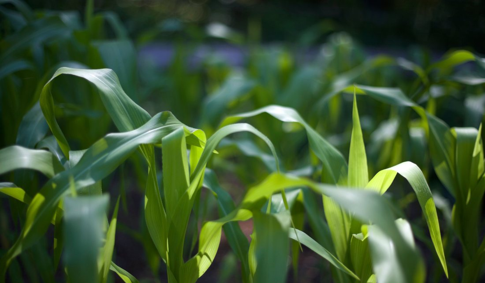
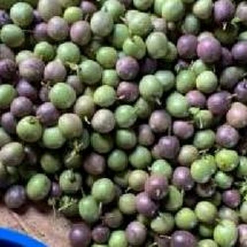

Services
Solutions built
around real farm needs.
From planning and production to engineering and markets, Pinnacle brings multiple agricultural capabilities together under one roof, so you don't have to coordinate five different specialists.

General Agribusiness Consultancy
Advisory support for farmers and agricultural businesses, helping you make stronger decisions from planning through execution.

Training & Capacity Building
Training and coaching programs that equip clients with practical skills and the confidence to apply them.

Farm Setup & Structures
Construction and management support for productive farm structures, from nurseries to greenhouses.

Agronomy
Crop and production guidance for improved productivity, tailored to local soils and seasons.

Seedling Production
Vegetable, spice, herb and fruit-tree seedlings supplied on order arrangement.

Commodity Marketing
Digital marketing, market research and market linkages that connect produce to buyers.

Agricultural Engineering
Farm structures, machinery management, repair and maintenance led by our in-house agricultural engineer.

Agroproduce & Handling
Practical support around produce handling and agricultural value chains, from field to pack house.

Farm Scouting & Inspection
Identifying areas for improvement on-farm and recommending practical, actionable solutions.

Livestock & Animal Production
Practical support for livestock production, management and agribusiness planning.
Also available on request
Not sure where to start?
Talk to a Pinnacle consultant.
Tell us about your farm or agribusiness idea and we'll point you to the right service.